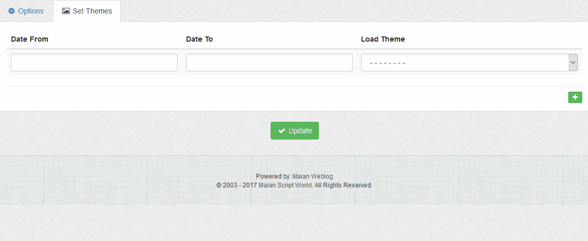

Theme settings for your journal. Different themes can load for different dates if applicable.
Options > Default Theme
Set the default theme for your journal, this is the main theme visitors will see initially.
Enable Set Themes
Enable or disable set themes. If enabled, see below.
Set Themes
If set themes are enabled you can load different themes at different times. For example, at Christmas you may have a Christmas theme. If you
have multiple themes that overlap dates, only the first is used. To create a new theme:
1 Make a copy of the existing '_theme_default' folder and rename to something else. Theme folders must always start '_theme' for the
system to pick them up.
2 Update new theme template set with a new design.
3 Specify theme on 'Set Themes' tab and dates you want them to load. For set themes, dates and template are required. Use the
calendar that appears to select dates. If both dates and template file aren`t specifed, theme will be ignored. Note that the default template set is NOT
shown in the drop down as this is used if no other templates are set.
Use the button to add more set theme rows and the button to remove last row.

Available Themes
If themes are available, they will be on the Maian Weblog website. If you
would like to submit a theme, please email it to: support@maianscriptworld.co.uk.
If you want to create commercial custom themes on your own websites, this is fine.